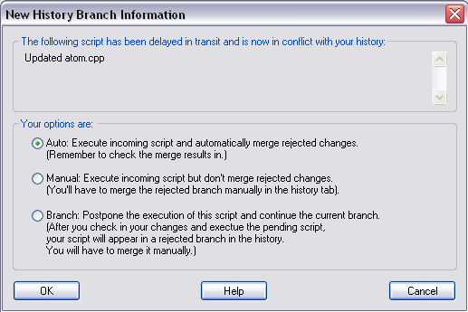

In a distributed version control system that uses email, it is possible that two scripts miss each other on the way between two developers. Code Co-op deals with such situations by making one script win and the other lose the conflict. The losing script becomes a side branch.
When you receive a script that loses, you'll see it in your history marked as Branch—it will be greyed out and in italics. The script contents are still accessible and can be brought into the project trunk through a merge. This is typically done by the person whose script was branched. But, in principle, anyone can merge a branch into the trunk.
When you try to execute an incoming script—whether manually or in auto-sync mode—and it conflicts with a check-in you did before, Code Co-op will display the following dialog:

In order to avoid conflicts, it's a good idea to always check your e-mail for incoming scripts before doing a check-in (or set the e-mail polling interval to just a few minutes). Conflicts may also occasionally happen in a LAN-based setup, especially when a computer has been off-line for some time and the user makes a check-in without waiting for the missed scripts to arrive (also, there is a "pull scripts from hub" item in the Dispatcher menu).